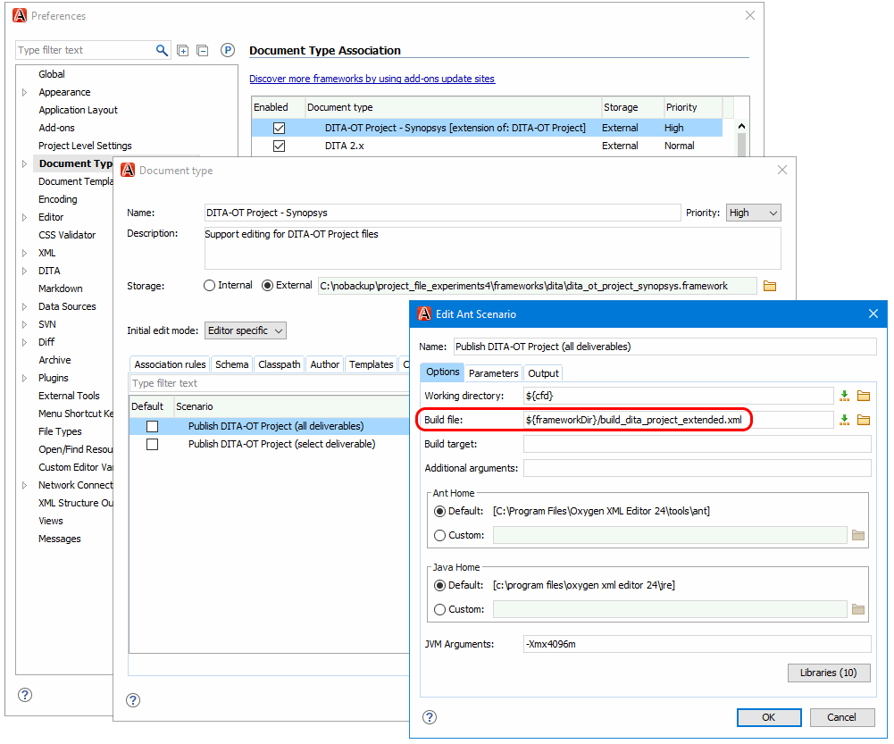
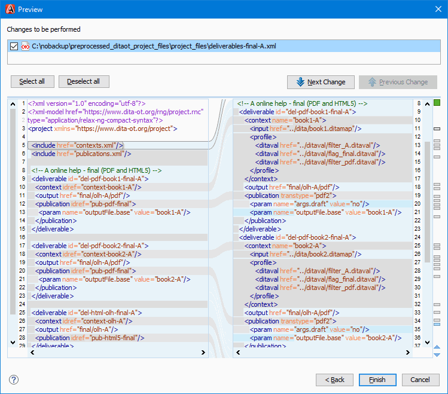

Preprocessing DITA-OT Project Files
Project files were introduced in the DITA-OT 3.4 release. They provide a standardized XML way to define how input DITA files should be published to output content files, including details such as filtering, transformation parameters, and output directory locations.
Our basic publishing requirements are as follows:
-
We publish some books multiple times in multiple DITAVAL filtering conditions.
-
We publish to both PDF (using PDF Chemistry) and online help (using Oxygen WebHelp).
-
PDFs are published individually per-book.
-
WebHelp is published as a collection of books, with in-help links to the PDF files.
-
-
We have "review" and "final" versions of our output.
-
These versions use different DITA-OT parameters and different DITAVAL flagging files.
-
As I attempted to create a DITA-OT project file to produce our deliverables, I encountered some limitations. This blog post describes how I created an XSLT-based preprocessing approach to work around these limitations.
Quick Overview of Project Files
A project file uses three primary building block elements:
-
<content>- an input DITA map to process- Can include one or more associated DITAVAL files
-
<publication>- a transformation to apply- Can include transformation parameters
-
<deliverable>- output content to create, by transforming a<context>with a<publication>- Can include an output subdirectory path (relative to the overall output directory)
In its simplest form, a <deliverable> can provide its own
<context> and <publication> information
within itself:
For more complex output content situations, a <deliverable> can
reference shared <context> and <publication>
elements by @idref references to @id values:
This @idref mechanism allows many deliverables to share common
context and publication definitions. If there is a change to a
<context> (perhaps a different map or new DITAVAL condition)
or a <publication> (perhaps an updated DITA-OT parameter), then
all relevant deliverables inherit the change automatically.
In addition, DITA-OT project files can use <include> statements
to structure their information across multiple files. This allows contexts to be
organized by product writer teams, publications to be placed in files maintained by
a DITA environment maintainer, and so on.
Limitation – Specify Per-Deliverable PDF File Names (#3682)
When I publish multiple PDFs from the same map using DITAVAL conditions, I needed to
define the outputFile.base parameter on a
per-<deliverable> basis to control the output PDF file
name:
DITA-OT versions before 4.0 do not allow <param> elements to be
controlled from a <publication> reference in a
<deliverable>. I filed the following DITA-OT enhancement
request for this:
#3682: In DITA-OT project files, allow a PDF <deliverable> to specify its output file name
It was implemented for DITA-OT 4.0 in the following pull request:
Limitation – Consider DITAVAL in Both <context> and <publication> (#3690)
I needed to apply DITAVAL from both <context> (for
@product filtering) and <publication> (for
@audience/@deliveryTarget/@rev
filtering/flagging of "review" and "final" deliverables):
DITA-OT versions before 4.0 do not properly combine <context> and
<publication> DITAVAL filtering. I filed the following
DITA-OT issue for this:
#3690: In DITA-OT project files, apply both <context> and <publication> DITAVAL filtering
It was implemented for DITA-OT 4.0 in the following pull request:
Limitation – Multiple Relative DITAVAL Paths (#3873)
When I tried to work around the previous issue by specifying a list of DITAVAL files
in a <publication>:
<deliverable ...>
<publication transtype="html5">
<param name="args.filter" path="flag_final.ditaval:filter_B.ditaval"/>
</publication>
...
</deliverable>I found that files after the first file were not expanded from relative to absolute paths, and thus were not resolved properly during publishing:
[ditaval-merge] [DOTJ071E][ERROR] Cannot find the specified DITAVAL 'file:/home/chrispy/dita-ot/filter_B.ditaval'.I filed the following DITA-OT issue for this:
#3873: args.filter does not support multiple relative paths in DITA-OT project file
Using Preprocessing to Work Around the Limitations
To work around these limitations in earlier DITA-OT versions before 4.0 is released, I created an XSLT file to do the following:
-
Read the input DITA-OT project file
-
Resolve
<include>statements to pull all content into a single file
-
-
Convert all DITAVAL file references to absolute paths (to work around #3873)
-
In
<deliverable>elements, replace all@idref'ed<context>and<publication>elements with copies of the referenced elements (so we can modify them per-<deliverable>) -
Find
<param>elements in<deliverable>, move them to<publication>instead (to work around #3682) -
Combine
<ditaval>references in<context>and<publication>into a list (to work around #3690)
I then applied this XSLT file as a preprocessing step to translate the unsupported project file constructs into supported constructs in a temporary preprocessed project file, then ran DITA-OT publishing using that temporary file. For example,
#!/bin/bash
rm -rf ./out
export DITAOT=$(dirname $(dirname $(which dita)))
export SAXON_JAR=~/saxon/saxon-he-10.6.jar
echo "Creating preprocessed DITA-OT project file..."
java \
-jar ${SAXON_JAR} \
-xsl:frameworks/dita/preprocess_project_file.xsl \
-s:project.xml \
-o:project.xml-preprocessed.xml
echo "Publishing preprocessed DITA-OT project file..."
${DITAOT}/bin/dita --project project.xml-preprocessed.xml -t temp --verbose
rm project.xml-preprocessed.xmlThis worked well from a linux command line, but we also needed our writers to be able to run it from Oxygen. To do this, I created a copy of Oxygen's project file build script at
<OXYGEN_INSTALL>/frameworks/dita/dita_project/build_dita_project.xmland added similar XSLT preprocessing to it using Ant commands, then placed the modified version at
frameworks/dita/build_dita_project_preprocessed.xmlin our Oxygen project directory. Then I extended the DITA-OT project file framework and created an extended DITA-OT project file transformation pointing to the modified build script:
This new transformation allowed Oxygen to publish project files that used the preprocessing workaround. The unsupported constructs still result in schema violations when the original (non-preprocessed) project files are opened for editing in Oxygen, but at least the publishing aspect works.
The preprocessing XSLT stylesheet requires Saxon to run. To support, this, the preprocessing-based DITA-OT project transformations specify a list of additional .jar libraries to use. To see these libraries, click the Libraries button in the dialog box shown above.
The following Oxygen project demonstrates this preprocessing approach:
preprocessed_ditaot_project_files.zip
To run it,
-
Extract the archive and open OPENME.xpr in Oxygen.
-
In the Project view, expand the Main Files list, right click on deliverables-all.xml and choose Transform > Transform With, and choose the Publish Preprocessed DITA-OT Project (all deliverables) transformation.
This will build "review" and "final" versions of both the "Product A" and "Product B" online help collections in the out/ directory, complete with correctly-named PDF files integrated into each online help collection.
There are other deliverable files for specific subsets of deliverables, organized into logical folders in the Main Files list.
To view the XSLT stylesheet without downloading the archive, click on the following link:
There are comments in the code to explain how it works.
Exploring How the XSLT Transformation Works
To help you explore how the XSLT transformation works, the Oxygen project also makes it available as a refactoring operation that you can manually preview on project files.
To do this,
-
In the Project view in the Main Files list in the project_files/ directory, right-click one of the deliverable*.xml files, then choose Refactoring > XML refactoring.
-
In the refactoring operation list, choose Synopsys > Preprocess DITA-OT project file refactoring operation.
-
Click the Preview button to see what the XSLT transformation would do.
For example,
Be sure not to actually apply the refactoring operation to the file. Otherwise, you will need to re-extract the archive to restore the original project file.